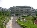

RUBES'
2015-2016 & 2016-2017
ABOUT
About HAS
Hsinchu American School is private, international school with a largely based American curriculum located in Hsinchu, Taiwan,. It was founded in 2004 by Glory Yeh, a Taiwanese real estate developer. HAS offers instruction in English for students grades 5-12. It is recognized by American Institute in Taiwan and the Taiwan Ministry of Education.
Figures
